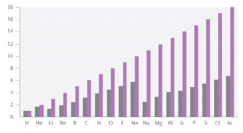
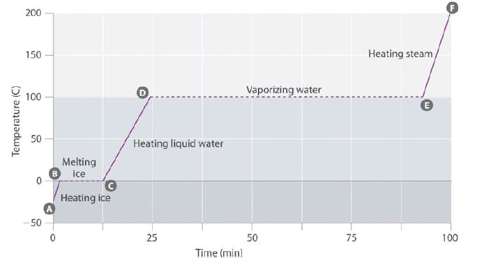

문제 3
3-1
다음 그림은 수소(원자번호 1)에서 아르곤(원자번호 18)까지의 원소들의 원자가전자의 유효핵전하를 나타낸 그래프이다.(회색막대가 원자가전자의 유효핵전하, 자주색막대가 원자번호) 다음 물음에 답하여라.

가. 같은 주기 내에서 원자번호가 증가할수록 유효핵전하가 증가하는 이유는 무엇인지 설명해보자.
나. 주기가 바뀌는 구간(18족 \(\to\) 1족)에서는 원자번호가 증가함에 따라 유효핵전하가 감소한다.(예: He \(\to\) Li, Ne \(\to\) Na) 이유가 무엇인지 설명해보자.
3-2
다음 그림은 물(\(\text{H}_2\text{O}\))을 일정한 압력에서 가열(얼음\(\to\)물\(\to\)수증기)하는 동안 온도변화를 관찰한 그래프이다. 단위 시간 당 가해지는 열량은 일정하다고 가정할 때 다음 물음에 답하여라.
가. 얼음의 가열곡선(A-B)과 물의 가열곡선(C-D)의 상대적인 기울기를 비교해 보면 얼음의 가열곡선(A-B)의 기울기가 더 가파르다. 그 이유를 분자 간에 작용하는 힘을 고려하여 설명해 보자.
나. 얼음\(\to\)물의 상전이 구간(B-C)와 물\(\to\)수증기의 상전이 구간(D-E)의 시간을 비교해 보면 물\(\to\)수증기의 상전이 구간(D-E)의 시간이 훨씬 더 걸린다. 그 이유를 역시 분자 간에 작용하는 힘을 고려하여 설명해 보자.
